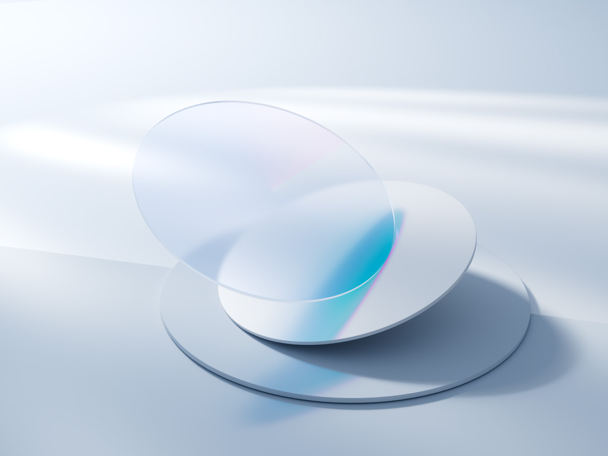

Reservaciones
Fica
Reservaciones FICA es un sistema que permite gestionar la variedad de eventos (defensas públicas, conferencias, evento populares, entre otros) que surgiran dentro de la Facultad de Ingeniería en Ciencias Aplicadas con la finalidad de agilizar el proceso de reservación de los mismos.